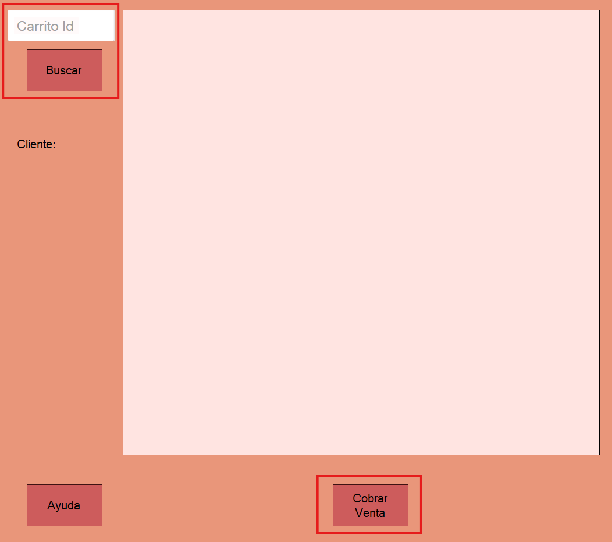

Ayuda: Generar Factura
La pantalla de Generar Factura permite al usuario cobrar la venta del carrito.
Guia paso a paso
Siga estos pasos para cobrar la venta:
- Ingresar un id de un carrito previamente creado.
- Haga clic en "Cobrar Venta" para redirigirse a la parte de cobro.

Notas adicionales
Recuerde que solo los usuarios con permisos adecuados pueden gestionar algunas acciones.